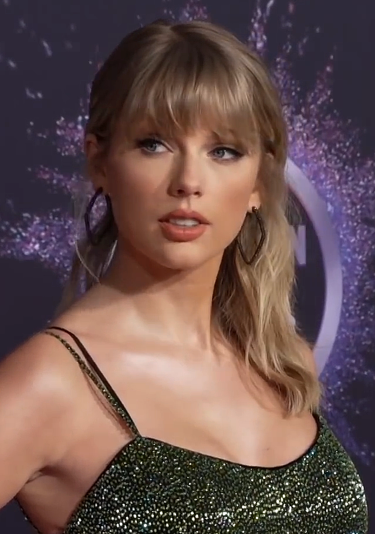
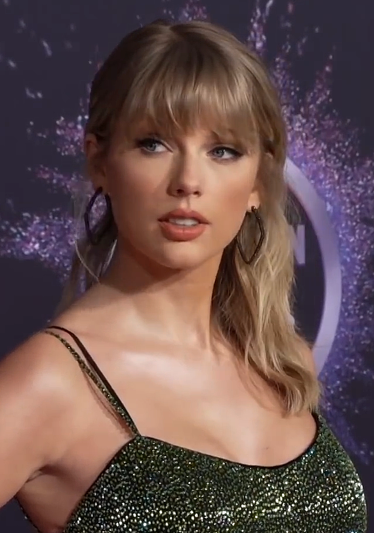
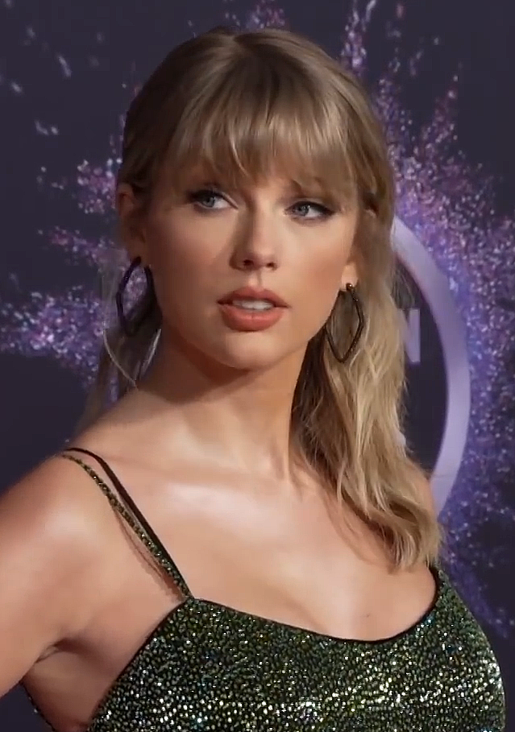
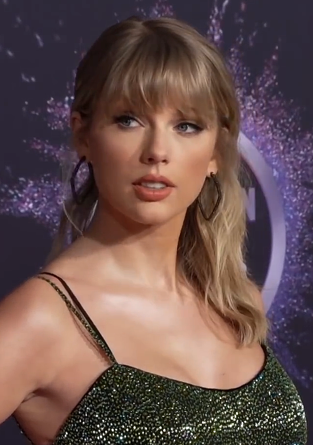

La gran carrera de Taylor Swift
Imagenes de Tay
 

 

Aquí se presenta la gran y exitosa discografia que tiene Taylor hasta el día de hoy.


 Evermore masterpiece
Evermore masterpiece
 Puede verlo aquí
Puede verlo aquí